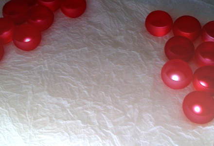
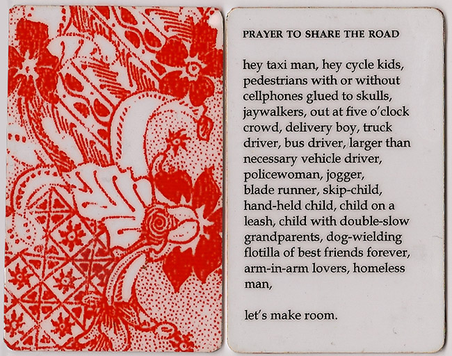
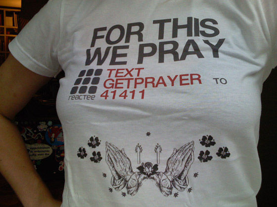

Aya Karpińska
for this we pray
Inspired by the tradition of lighting candles during prayer, for this we pray brings the experience of reflection to the everyday world of the jaded digital generation. Users select one of several prayer cards, and hold it close to a wall-mounted “shrine” reminiscent of a stained-glass window. The prayer card is recognized via RFID, and a light is turned on. As more prayers are "read" the shrine will fill with light.


The technology employed brings something new to reading, it ties the writing to an action that enriches the experience. Writing becomes performance. The use of cards is inpsired by the prayer cards I would receive after special Catholic masses as a child, cards with an image of a saint on one side and a lyric or prayer on the other side. These cards are kept in your bag or in your prayer book, wherever you would be likely to happen upon them and reflect once more on the essence of the thought the prayer card communicates. Each of the cards in for this we pray are devoted to a specific intention, each is a fragment, a musing on the role of prayer in the life of a hyper-digital urban atheist such as myself.

The project also exists as an SMS service that delivers prayers of 125 characters or less to your mobile phone on a (more or less) monthly basis.
To subscribe, text the phrase GETPRAYER to 41411 (US only).
There is no charge for receiving these SMS messages, except for any charges usually carried out by your service provider. Your first SMS will contain instructions for cancelling your subscription.

Credits
Cristobal Mendoza (http://matadata.com/) and David Durand were a great help in implementing the source code for the installation.